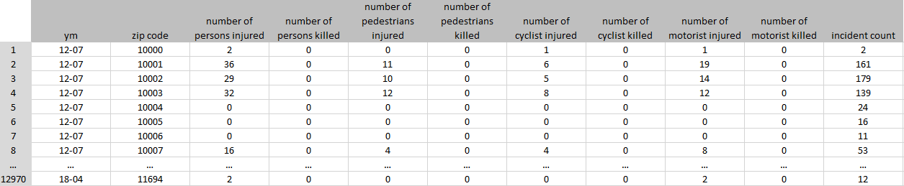
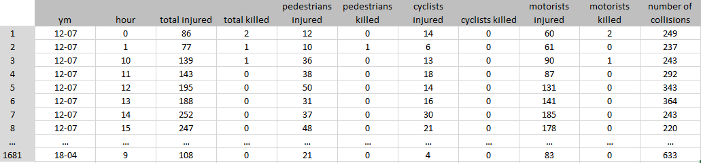
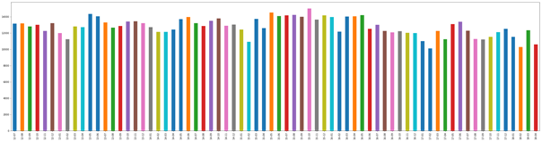
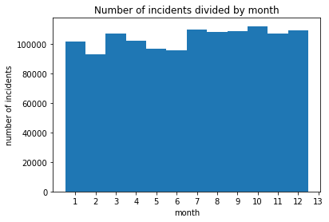
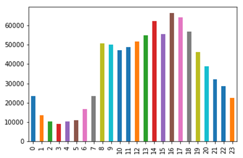

Explainer Page
Motivation
What is your dataset?
The dataset used is NYPD's Motor Vehicle Collisions, which is provided by the NYC Open Data repository. This dataset was created for the Vision Zero initiative, which is a multi-national road traffic safety project that aims at decreasing the number of fatalities or serious injuries involving road traffic.
The dataset consist of information about all collisions in NYC from July 2012 to April 2018. It contains information about date, location, cause of the accident, number and type of injured, and killed road users. The dataset consists of 1.25M rows, 29 columns, resulting in a file size of 275MB.
Why did you choose this/these particular dataset?
Each of the group members is an active driver, cyclist and pedestrian. The problem of traffic accidents is close to our hearts. We have decided to explore the collision data to see if there were any underlying trends and relationships that could explain the number of accidents occurring. As a consequence, it might help responsible institutions to find out what could be done to make cities safer.
Moreover, The NYPD's Motor Vehicle Collisions dataset is large and covers a long range of time. Data contains wide range of information (time, location, zipcode, type of victim, cause of accident etc). As a consequence, we have found this dataset very attractive and reliable. We believe that the theses made on the basis of these data, can be considered as reasonable.
What was your goal for the end user’s experience?
When planning and implementing this project, we were very much inspired by the articles created by Ben Wellington. Using narration, we wanted to lead the reader through the process of finding underlying trends and relationships. For this reason, our site consists of a short article combined with a group of interactive visualizations. The visualisation where carefully selected. The goal was to give the user a general overview and encourage him, by suggesting different hypotheses, to go into more details, using interactive visualisations. We wanted the graphs to be understandable, intuitive and aesthetic. We strongly believe that the user will be willing to analyse the data even deeper, than the narration suggests. We have decided that the visualisation process should be accompanied by three main questions: Where, when and why?
- Where are the most dangerous spots?
- When do most collisions occur?
- What are the most frequent causes?
Basic stats. Let’s understand the dataset better
Data cleaning and preprocessing.
We faced two main dataset challenges before creating the visualizations. First of all, many samples had missing data (for instance lack of zip code). Secondly, the data set is huge. It was not possible to load about a million samples of data using JavaScript.
As a consequence, we have adapted the dataset strictly to our needs. Firstly, we have removed all samples, which did not have information about the zip code (we have decided to use choropleth, where area of NYC was divided by zip code). It allowed us to reduce the dataset from 1,254,340 rows to 894,293. Secondly, we have decided to create two separate datasets (Dataset A and Dataset B), which thanks to nesting, were significantly reduced.
Dataset A was prepared mainly to show the distribution of collisions on the map of NYC. Originally, we were planning to plot the location of the accidents However, it turned out to be impossible, due to the size of the dataset. Consequently, we have changed our plans and agreed to use zip code choropleth map as a substitute. For this reason, we have grouped all rows by the zip code and year-month (ym). Number of collisions, injured drivers, killed drivers, injured cyclists, killed cyclists, injured pedestrians and killed pedestrians have been counted. The final structure of the dataset is presented below. We have decreased the number of rows from ~900,000 to 12969 rows, and the number of columns from 29 to 11.
Dataset B was created in order to find the distribution of collisions, as well as injured and killed over hours of day. Data have been grouped by the year-month (ym) and the hour when the accident happened. It has resulted in a reduction of the dataset from 900,000 to 1680 rows and from 29 columns to 11 columns.
Exploratory Data Analysis
The first stage of the project was dedicated to explore the dataset, in order to understand the dataset set in a greater scope and put our focus in the right direction. We created many plots, of which we would like to show a few. Firstly, we wanted to see the overall distribution of collisions each month between 2012 and 2018. The graph is presented below.
There is no huge variance between number of collisions each month, the value is on average around 13,000 accidents. Moreover, we have noticed that each February (turquoise bar) there seems to be a decrease in number of incidents. In order to confirm that information, we have plotted number of collisions per month, presented below.
It confirms that in February, the number of accidents is lower than in other months. We suspect that it might be caused by winter holidays in NYC, which results in lower traffic, meaning less collisions. Moreover, May and June are also characterized by a smaller number of accidents, which can be caused by the same cause - holidays. Before working with D3, we wanted to confirm our expectations about distribution of collisions during the day. We were suspecting that most accidents are in the morning, when people are driving to work, being in a hurry, and probably still sleepy. For that reason, we have plotted number of collisions versus hour, taking into account all the data we had.
As it turned out, we have been wrong. The most collisions happen around 4-5 PM, when people are getting back from work. It might be caused by the fact that they are tired, which in turn can make them more vulnerable for distractions. We have also decided to check what the main causes of the collisions are. Is it drunk drivers?
As it turned out, drivers under influence are causing the least collisions. The main problem seems to be lack of driving skills and distractions. Having performed such analysis, we have planned a scenario for our data story, decided which genre we want to choose and how we would like to visualize the data, in order to make it interesting and understandable for the reader.
Genre. Which genre of data story did you use?
Among presented genres in the Segal and Heer [1] article, we have selected Partitioned Poster as the one that best meets our needs. The main advantage of this genre is interactivity and flexibility. Partitioned Poster allows us to treat a few different aspects, such as localisation, time and causes of accidents, but still keep everything coherent and understandable. What is more, this type of narration does not impose on the reader an obligatory order of analyzing data, thanks to which we allow the user to explore and view the data from their own perspective.
Visual Narrative Tools
Category A: Visual Structuring
Time bar - the aim was to enable the user to analyze the changes occurring in the number of accidents or injured people in the perspective of time.
Category B: Highlighting
Feature distinction - in the histogram "Reported Injured / Killed People as Result of an Incident" we have implemented a data series distinction after hovering over the selected element of the legend. One chart collects three sets of data: car drivers, cyclists and pedestrians. Feature distinction allows you to increase the readability of the chart and focus on one data series, if required.
Motion - through interaction with visualizations, histograms are updated using transitioning: the size of the scales as well as bar height change in a smooth way, which allows for a better understanding of the data, making increases or decreases immediately visible.
Category C: Transition Guidance
Animated Transitions - filtering the period of time, which the user wants to visualize, causes automatic changes on both histograms (“Reported Injured/Killed People as Result of an Incident“ and “Number of reported Incidents for the Period”), both scale and height of bars. It allows to quickly notice changes in trends and easier understand the data.
Narrative Structure Tools
Category A: Ordering
Random Access - we allow the user to randomly access in order to encourage him to explore data in his own way and look for more hidden pattern.
Category B: Interactivity
Details - with the help of the map and histograms, we follow the idea ‘start from general view and go into details when needed’. At the first glance, the reader sees the general distribution of data. If he is more interested, he can hover over the map and find out the exact number of collisions in a given region and in which district it is located. Moreover, hovering on the column in the histogram allows you to get to know the exact values of collisions or injured/killed. The user in this way is more involved and encouraged to analyze the data.
Filtering/selecting - as previously mentioned, we use the timeline to filter out the time period that the user analyzes. This allows you to compare individual time periods, and sometimes linking events in this period with the results on the charts.
Explicit instruction - we avoid explicit instructions, but we must admit that in the introductory article, we are suggesting a few specific interactions with the visualizations, that will allow the reader to better understand the content of the article. charts.
Category C: Messaging
Headlines – we have used an article title and headlines for each chart as well as map and time series in order to communicate to the viewer, what he is looking at and what he should expect from the visualisation. This type of messaging is very short but informative.
Accompanying Article - we were inspired by Ben Wellington, who creates his posts in a very understandable way. They consist of charts and a short article in which he tries to tell an interesting story. We try to do the same. We used accompanying article to start a discussion with the reader, take the first step towards understanding the data and encourage him to further analysis.
Introductory Text – we consider our text in the webpage as something between introductory text and accompanying article. The purpose is described above.
Summary - at the end of our article, we are summing up drawn conclusions and state a question, which is supposed to stimulate the reader for additional discussion.
Visualizations
Choropleth map
Using a choropleth map, we decided to present collision distribution in New York. As we mentioned earlier, the initial idea was to set points on the map for each incident, but unfortunately the dataset is too large and JavaScript would not be able to handle it. We have divided the map of NY according to postal codes. A more intense color means a greater number of collisions in a given area, while the white color means no collision at all. Tooltips were also implemented. After hovering over the individual areas, the user can get to know more details, including: the number of collisions, zip code or the name of the borough in which he is located.
Time series
Both choropleth and histograms are directly connected to the time series in the upper part of the visualization. Thanks to the timeline, it is possible to choose a time interval from which the data is to be presented. Each change of the period has a direct impact on the presented visualizations. The user can brush the time axis and move the selected time period over the time axis.
Histograms
Histograms take into account the period of time marked on the timeline. It automatically adjusts the scale of the axis and use the transition to animate the change in the height of the bars. First histogram shows the distribution of the number of people injured and killed at the hour of the day. This histogram is based on three data series: car drivers, cyclist and pedestrians. Histograms are placed on one graph, so that the bars overlap each other. In order to distinguish a series of data, three different colors from the same palette of colors were used. What's more, by moving the mouse over the legend, the appropriate data series is highlighted. Finally, a tooltip has been implemented here. Hovering over the individual bar, allows the viewer to familiarize himself with the hourly period covered by the bar and the number of victims for individual groups.
The second histogram summarizes all types of collisions and presents distribution of accidents during the day. It has similar properties as the visualization presented before. Tooltip describes the period of time during the day and the number of accidents.
Bar chart
The last graph presented on our website is a bar chart. It presents the number of accidents caused by various causes throughout the entire analyzed period.
Why were they right for the story we wanted to tell?
It is worth recalling that during the project development, we have been lead by three main questions that we wanted to answer. Where do the most accidents happen? What time of the day? Why did it happen? Those questions were a guidance for us in the selection of visualizations.
To answer the “Where?” question, we have decided to use a choropleth map, since it is visually effective – the reader can quickly oversee large amount of information and easily discover general patterns. Levels of colour represent a range of values, which is easy to interpret. It was especially useful for us, since we could divide NYC map into zip codes areas. In order to answer the question ”When?” the histogram seemed to us the best choice, since it is a great tool to show frequency distributions within equal intervals. We could graph a huge amount of data using one plot, keeping it simple and understandable.
In response to the last question “Why?” we decided to use the bar chart. It allows us summarize a large amount of data in visual, easily interpretable form. It allows the viewer to easily compare relation between different accident contributing factors.
Discussion. Think critically about your creation
What went well?
It is always awkward to evaluate your own work before anybody else will do it. Nevertheless, we are especially pleased with several aspects of our project. First of all, the data pre-processing ran quite smoothly. The acquired skills of using python and pandas library allowed us to receive exactly what we needed to create a visualization in d3.
We are satisfied by the process of data exploration, which helped us to a deeper understanding of the data and come up with an interesting story, which we find decent and reliable.
From the technical point of view of D3 library usage, we consider integration of choropleth map with time series and histograms, as a success. It was a challenge at the beginning, but we have handled it.
Finally, we have asked a few students, who are not part of this course, to play with our website and share their opinions. They were very pleased with the intuitiveness, interactions and aesthetics of the website. They all got interested by the story and were willing to explore data further. These tests confirmed our belief that we have done quite a decent piece of work.
What is still missing? What could be improved?, Why?
As we approached the end of our project, more and more ideas for a future work came to us. Having more time, we would try to go into more details in the data exploration. Firstly, we would analyze collisions caused by different contributing factors separately. Using that approach, we could validate the hypothesis that the most of collisions caused by drunk drivers is happening in the late evening or during the night.
Secondly, we would focus more on the comparison of individual years according to collisions growth or drop. We could also use the choropleth map for this purpose, as we did now. Instead of using the number of collisions as input, we could use the percentage of increase or decrease of the collisions in a given area. That would allow us to find areas where the safety is growing.
Thirdly, we came up with idea of finding relationship between location and the type of accident. Maybe we would be able to answer question like: “Are the pedestrians more involved in accidents in suburbs than downtown?”.
Contributions. Who did what?
Data exploration: Thomas, Henriette, Lukasz
Data preprocessing: Henriette
Choropleth: Lukasz and Henriette
Histograms: Thomas
Merging visualizations: Thomas
Web Article: Lukasz and Henriette
Explainer Page: Lukasz
We feel that all group members contributed equally to the project as a whole.
References
[1] Segel, Edward, and Jeffrey Heer. "Narrative visualization: Telling stories with data." IEEE transactions on visualization and computer graphics 16.6 (2010): 1139-1148.